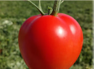
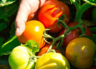
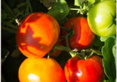
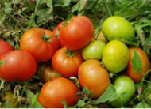
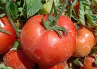
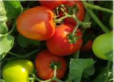
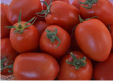

Agridera Гібриди Томатів
Agridera прагне бути однією з провідних світових компаній з селекції, виробництва та маркетингу насіння томатів. Ми інтенсивно інвестуємо в дослідження та розробки, щоб надати рішення фермерам та споживачам у багатьох країнах світу.
Основна увага приділяється поєднанню стійкості до TYLCV, TSWV та інших ґрунтових хвороб для створення кращих ліній та гібридів. Також розробляються сорти, стійкі до TBRFV.
Програми селекції Agridera зосереджені на трьох основних напрямках: тепличні індетермінантні томати, відкритого ґрунту індетермінантні томати та відкритого ґрунту детермінантні томати.
Селекційні програми
Тепличні Індетермінантні Томати
Для іспанського і турецького ринків. Включає томати для одиночного та китичного збору, круглі плоди та стійкість до TYLCV, TSWV, нематод і Fusarium oxysporum.
Індетермінантні Томати для Відкритого Ґрунту
Для бразильського, марокканського та турецького ринків. Великі круглі томати (200 г і більше) зі стійкістю до TYLCV, TSWV, нематод і Fusarium oxysporum.
Детермінантні Томати для Відкритого Ґрунту
Для середземноморських ринків. Ми вирощуємо круглі та подовжені плоди стандартних розмірів (140-180 г) та біф-томати (180-300 г).
Наші продукти

Томат 1000 (TAG 853) - Червоний стандартний круглий

Томат 1001 (TAG 855) - Червоний стандартний круглий

Томат 1002 (TAG 809) - Червоний стандартний круглий

Томат 1003 (TAG 834) - Червоний стандартний круглий

Томат 1004 (TAG 848) - Червоний BEEF круглий

Томат 1005 (TAG 800) - Червоний стандартний круглий

Томат 1006 (TAG 898) - Червоний видовжений

Томат 1007 (TAG 816) - Червоний видовжений